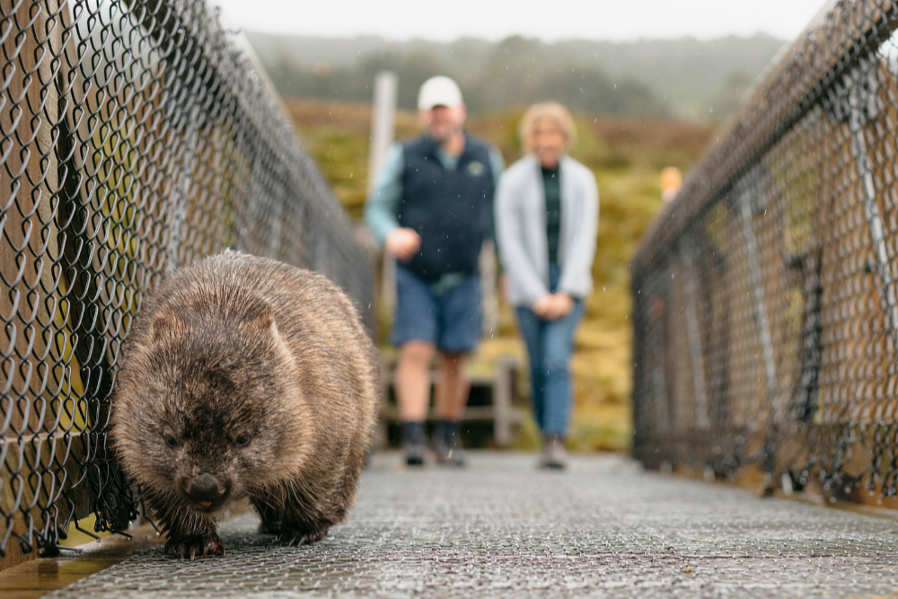

Australian Wildlife Watching
Here in Australia, there are a range of wildlife related activities Australian can participate in,
one of which is wildlife spotting. Australia is home to a diverse set of wildlife, ranging from icon mammals
to rare amphibians. The opportunity to explore and spot these animals are dependent on the location, time of
day and year, and the animal’s overall rarity.
Whether it be observing kangaroos at dawn, listening for nocturnal calls in the rainforest, or scanning coastal waters
for migrating whales, wildlife spotting invites all Australians no matter their age to engage deeply with the environment
and appreciate the remarkable biodiversity that defines the continent.
Image taken from
Let's Go Caravan & Camping

Types of Wildlife Activites Australians Participate in
The same top two, everywhere
Look across the chart and the stacks look almost identical. In every state and territory, national parks and botanic gardens come first (23-26% of activity), followed by nature and bush walks (17-21%). Together they make up roughly 45% of all nature activity. These are the easiest ways to get out into nature. Most Australians live in or near a city, and a park or garden is a short trip away. Walking needs no booking, no special gear and little money, so almost anyone can do it.
What about wildlife spotting?
Wildlife spotting is the small slice of the chart. Bird, whale and other nature watching makes up only about 7-11% of nature activity in every state and territory. Spotting wildlife asks more of people than a walk in the park does. It usually takes patience, some knowledge of what to look for, and often equipment such as binoculars or a boat trip. Whale watching is tied to a season and a stretch of coast, so most Australians can only do it occasionally. Birdwatching is also a dedicated hobby that appeals to a smaller group than general outdoor recreation.
Types of Wildlife Activites Australians Participate in
What we see
The heatmap is dominated by three reasons, and they look almost the same in every state and territory. Enjoyment is the biggest, at 36-40% (highest in NSW at 40.3%, lowest in the ACT at 36.0%). Social reasons come second at a steady 24-26%, and exercise third at 16-22%. Together these three account for 80-85% of all reasons everywhere. Besides leisure related reasonings, support for the local environment (5.5-7.9%), education or work (4.4-7.4%) and nature conservation (3.5-5.1%) add up to only about 14-18%. "Other reasons" and "did not know" are close to zero. The few differences between states are small, often under three percentage points. The Northern Territory has the most people going for education or work (7.4%) and the fewest for exercise (15.9%).
Why this is the case
Most people treat nature as leisure. They go to have a good time, usually with friends or family, and to stay active, so enjoyment, company and exercise dominate. Caring about conservation or the local environment may be something people feel without it being the reason they head out for the day. The pattern is so similar across states because these motives are personal and don't depend much on where you live. A family picnic in a Melbourne park and a weekend bushwalk near Sydney are driven by the same things. The small gaps likely reflect local context.
Which State has the Greatest Animal Diversity
What we see
The map tells a story of one state pulling well ahead of the rest. Queensland is the darkest green on the map, with 57.1% of all the animal species recorded in Australia found there. New South Wales follows at 46.3%, then Western Australia at 36.5% and Victoria at 31.3%. South Australia sits in the middle at 28.0%, while the Northern Territory (18.4%), Tasmania (16.1%) and the Australian Capital Territory (15.8%) are the palest. The surprise is size. Western Australia and the Northern Territory cover huge areas, yet neither comes close to Queensland. The ACT is a tiny territory, but it ends up almost level with Tasmania. The percentages add up to well over 100% because many species live in more than one state.
Why this is the case
Diversity follows variety more than size. Queensland packs rainforest, reef, savanna, wetland and dry inland country into one state, and each habitat brings animals of its own. New South Wales has a similar mix of coast, ranges and plains, which likely explains its second place. Western Australia is enormous, but much of it is isolated desert, and many of its animals live nowhere else, so fewer of its species are shared with the rest of the country. Tasmania is a small island cut off from the mainland, which limits what can live there. Recording effort probably plays a part too. States with more people, parks and keen observers log more sightings, so the map shows where animals live and also where people have been looking.
Common Animal Groups Spotted
What we see
The pie chart is dominated by a single slice, birds, accounting for 90.4% of all observations. Invertebrates are a distant second at 4.5%, roughly one twentieth of the bird total. Mammals follow at 2.4%, then fish (1.3%), reptiles (0.9%) and amphibians (0.4%). The surprise is that the animals most closely linked to Australia in the public imagination, such as kangaroos and koalas, sit in a slice smaller than the one for insects and spiders.
Why this is the case
Observations measure how easy an animal is to spot and record, which is not the same as how common it is. Birds are active in the daytime, live almost everywhere from city parks to remote coastline, and are often loud and easy to identify. Most mammals are shy or nocturnal, so people rarely see them. Fish are hidden underwater, reptiles stay still and blend into their surroundings, and amphibians are small, seasonal and mostly come out at night near water. Invertebrates are plentiful but tiny and hard to tell apart without close inspection. Birdwatching is also a well-established hobby with a strong culture of logging every sighting, and a small number of dedicated observers can submit thousands of records each. The chart shows what Australians choose to look for and record more than the true balance of wildlife in the country.
Most Common Species in each Animal Group
What we see
The treemap shows the five most observed species in each animal group, with box size showing the number of observations. The most observed species of all is the Australian Magpie with 146,668 records, followed by the Rainbow Lorikeet (127,139) and the Magpie-lark (123,555). This one bird has more than twice as many observations as the top five mammals combined, led by the Koala (19,230) and the Eastern Grey Kangaroo (15,626). Within some groups a single species stands out: the Bluefin Leatherjacket makes up 57% of the top-five fish observations, and the Cane Toad 41% of the amphibians.
Why this is the case
The chart shows how often each species is spotted and recorded, which is not the same as how many of them there are. All five top birds, the Australian Magpie, Rainbow Lorikeet, Magpie-lark, Noisy Miner and Welcome Swallow, are loud, active in the daytime and common in suburban gardens and parks, so people see them every day without having to go looking. Mammals are recorded far less often. Koalas and kangaroos live in particular habitats, and many mammals, including the possums and foxes in the list, are active at night. Fish are underwater, reptiles blend into their surroundings, and amphibians are small and mostly active at night near water, so they all appear in fewer records. Invertebrates are plentiful, but they are tiny and hard to identify, and the top species in that group are mostly moths. Birdwatching is also a popular hobby with a strong habit of logging every sighting, which pushes the bird counts even higher. The introduced species appear because they are common and widespread, and people often record pests such as foxes, rabbits and cane toads.
Which Areas has the Most Recorded Wildlife Observations
What we see
The map shows the distribution of wildlife observations across Australia, with each grid square representing a geographic area and its colour indicating the percentage of observations recorded within that square. Darker red squares represent areas with a higher share of observations, while lighter shades indicate a smaller share. The map reveals that wildlife observations are not spread evenly across the continent, with noticeable concentrations in certain regions. These patterns can be explored using the animal group buttons, which allow comparisons between all animals, amphibians, birds, fish, invertebrates, mammals and reptiles. Selecting different groups reveals how their geographic distributions vary, with some groups appearing more concentrated in particular regions while others have observations across a wider area. The map therefore provides an overview of where wildlife is most frequently observed and how these patterns differ between animal groups.
Why this is the case
The distribution of wildlife observations is influenced by habitat, climate, food availability and species' geographic ranges. Australia's diverse environments support different wildlife communities, with birds occupying varied habitats, amphibians favouring moist environments, and fish inhabiting freshwater and coastal waters. These differences help explain the geographic patterns seen on the map. However, densely populated cities and towns may have more recorded sightings because more people visit local parks and nature reserves, while remote regions may have fewer observations due to less human activity. Therefore, more observations do not necessarily indicate greater wildlife abundance or diversity, as the map reflects both animal distributions and human observation activity.
Which Month is best to Observe Each Animal Group
What we see
The charts compare the monthly distribution of wildlife observations across all Australian states and territories, with each panel representing a different animal group. The radial distance shows the percentage of each group's annual observations recorded in a particular month, while the colours distinguish the four seasons. Across all groups, observations are spread unevenly throughout the year, with certain months showing noticeably higher shares. Amphibians have a particularly strong peak in September, while fish and invertebrates show higher observation shares during spring, especially around October and November. Mammals and reptiles also show elevated observations during spring, although their monthly patterns are more distributed across the year. Birds display a noticeable peak in December, followed by another period of relatively high observations during late winter. The chart for all animal groups combined shows that observation patterns vary throughout the year, rather than remaining consistent from month to month.
Why this is the case
Seasonal changes influence wildlife behaviour, breeding cycles, food availability and the likelihood of animals being encountered. Spring often brings increased activity as many species breed, establish territories, forage and care for their young. This help explain the higher spring observation shares for amphibians, fish, invertebrates and some mammals and reptiles. Amphibians are particularly sensitive to moisture and temperature, and spring rainfall can create favourable conditions for calling, breeding and movement. Invertebrates may become more active as temperatures rise and flowering plants provide additional food resources. Birds can show seasonal changes in movement, breeding and feeding activity, which may contribute to their higher observation share in December and during late winter. Mammals and reptiles respond to changes in temperature and food availability, affecting when they forage, bask or move through their habitats. These seasonal patterns show why the best time to look for wildlife can differ between animal groups, with spring offering particularly promising opportunities for observing several groups, while other groups may have their own distinct periods of activity.
What's the best time to Spot Wildlife
What we see
Each panel shows one animal group, and the height shows what percentage of that group's observations happen at each time of day. All animal groups share a similar pattern, with a spike in activity in the first half of daylight. Mammals adn amphibians are the most concentrated during this period, with a spike in obersation at 8am, 10am and 11am. For birds, fish, invertebrates, and reptiles, althought they have observations during the day, they also have observations being made at night.
Why this is the case
These patterns can be explained partly by differences in animal behaviour, including feeding routines, temperature preferences and daily activity cycles. Many mammals are active during the early morning, when temperatures are cooler and food resources may be easier to access. Amphibians, although often associated with nighttime activity, can also be encountered during the day in suitable moist and shaded environments, particularly when conditions support their activity. Birds are frequently active around sunrise as they begin foraging, calling and defending their territories, while some species become active again towards dusk before settling to roost. Fish activity varies with species, water temperature, light levels and feeding patterns, allowing observations to occur throughout the day and night. Many invertebrates, including nocturnal insects, become more active after sunset, while reptiles often adjust their activity to surrounding temperatures, basking during cooler periods and seeking shade when conditions become too hot. Together, these behavioural differences help explain why mammals and amphibians show more concentrated morning peaks, while birds, fish, invertebrates and reptiles have observations spread across a wider range of times.
Number of Endangered Species in Each State
What we see
The map is built from 569 records of an endangered species seen in a state, covering 238 different species. The pies are biggest in the south-east: New South Wales leads with 132 species, then Victoria (94) and Queensland (93), followed by South Australia (68), Western Australia (67) and Tasmania (51). The Northern Territory (34) and the Australian Capital Territory (30) have the smallest pies. The slices look alike everywhere. Vulnerable is the largest slice in every state, from 50% in New South Wales to 71% in the Northern Territory. Endangered is second (21-42%), and Critically Endangered is a thin wedge of only 6-10%. Birds make up the most amount of endangered species in every state.
Why this is the case
Size and variety of land matters. The large south-eastern states contain coast, ranges, rivers and inland plains, so they hold more kinds of animals and therefore more that are at risk. Groups that can move, like birds, spread across many states and habitats. That may be why their pies look so similar everywhere and why most birds are still only Vulnerable. Groups tied to one kind of place are different. Frogs, fish and many invertebrates depend on particular rivers, wetlands or patches of forest, so a small loss of habitat can push them straight to Endangered or Critically Endangered. That fits with fish clustering in Victoria, amphibians in New South Wales and Queensland, and invertebrates having the largest share of Critically Endangered. Mammals and reptiles often have small home ranges and may face habitat loss and introduced predators, which could explain why so many of them are Endangered.
Changes in the Number of Endangered Animals
What we see
The dumbbell chart compares the number of threatened animal species in Australia in 2020 and 2025, across all animal groups. All three categories rose. The total went from 660 species to 727, an increase of 67 (10%). Vulnerable species grew the most, from 296 to 340 (+44, 15%). Endangered species rose from 272 to 285 (+13, 5%), and critically endangered species rose from 92 to 102 (+10, 11%).
Why this is the case
There are many drivers for this, but one of the main drivers are human activities. Habitat loss, climate change and pollution are putting more animals at risk, and as pressure on a species grows it can move up a threat category. This helps explain why the vulnerable group is growing fastest. It is the first step on the scale, so it is where species arrive when their numbers begin to fall. The increases may also partly reflect better monitoring, because as more species are assessed, more of them are found to be at risk.The overall direction over these five years is clear: more Australian animals are classed as threatened than before.
What Australian's are Doing to Give Back to the Environment
What we see
The ring is dominated by volunteering. About 772,500 of the roughly 792,800 recorded activities, or around 97%, are volunteer work for nature conservation. Within that, caring for land or bush is the biggest slice at 378,800, close to half of all volunteering. Other activities (202,100) and supporting or caring for wildlife (191,600) share most of the rest. Advocacy is the thin sliver at the top, only about 20,300 in total or roughly 3%. Of that, joining a rally is the largest piece (8,600), followed by contacting a Member of Parliament (5,400), signing a petition (4,000) and donating money (2,300).
Why this is the case
Volunteering is something people can do close to home and fit around their week, such as a morning planting trees, clearing weeds or cleaning up a creek. It needs little training, local groups and councils organise it, and the result is visible straight away. Advocacy asks for something different. It means writing to a politician, giving money or turning up to a protest, and fewer people are willing or able to do that. Each slice shows how many people took part, not how much difference the action made, so a small slice doesn't mean it matters less.
References and Declaration
Author
This visualisation (FIT3179 DV2) was created by Yong Zheng Ryan Tan (33141673).
Data sources
The data used in this project came from the following sources.
- Atlas of Living Australia (ALA). https://www.ala.org.au/
- Australian Bureau of Statistics (ABS). https://www.abs.gov.au/ausstats/abs@.nsf/Lookup/4602.0.00.002main%20features52011-12
Declaration of AI use
ChatGPT was also used to clean the dataset that were obtained from our two sources. Its use case was to write the appropriate Python scripts using Pandas to transform the data into a useable format. I've also check the output produce to ensure that the data remainds accurate and correct. Claude was used to help write and edit the Vega chart specifications and the written descriptions that sit alongside each visualisation. The data sources, the choice of charts and the final content were reviewed before publishing.